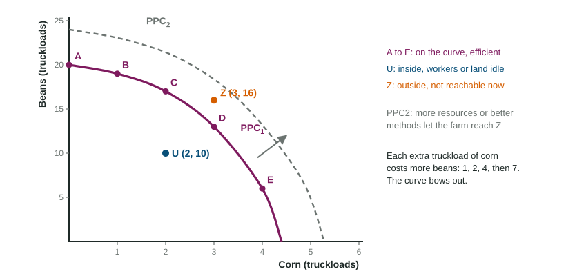

Production Possibilities Curve
A production possibilities curve shows every combination of two goods a producer can make when it uses all its resources efficiently with its current methods.
Part 1 · Hook
Why this matters
Part 2 · Before you start
What this builds on
Part 3 · Prerequisite check
Quick check before you start
1. The opportunity cost of a choice is
- the value of the next-best alternative given up
- the money price of the choice
- the sum of every alternative given up
- zero when the choice is free
Show the answer
Only the single next-best alternative counts.
- Correct: the value of the next-best alternative given up:
- the money price of the choice:
- the sum of every alternative given up:
- zero when the choice is free:
2. A curve that falls to the right has
- a negative slope
- a positive slope
- a slope of 0
- a minimum point
Show the answer
One variable falls as the other rises.
- Correct: a negative slope:
- a positive slope:
- a slope of 0:
- a minimum point:
3. When a curve shifts right on a graph, the new curve is labeled
- with subscript 2 and an arrow from the old one
- with the same label as before
- with no label
- by erasing the old curve
Show the answer
Keep the old curve (1), add the new (2) and an arrow.
- Correct: with subscript 2 and an arrow from the old one:
- with the same label as before:
- with no label:
- by erasing the old curve:
Part 4 · See it
See it first

Part 5 · Step by step
How it works, step by step
- The farm moves resources from beans to cornit uses fields and workers that are less and less suited to corn
- Each extra truckload of corn needs more of those less-suited resourcesit gives up more beans than the truckload before
- The opportunity cost of corn rises as more corn is grownthe PPC gets steeper as you move right: it bows out
- The farm gains more resources or better technologythe whole PPC shifts out, and combinations once outside it become reachable
Part 6 · Key ideas
Key ideas
- A production possibilities curve (PPC) shows the most of two goods a producer can make with its resources and methods. It shows scarcity (points beyond it), trade-offs (moving along it) and opportunity cost (what one good costs in the other).
- Points on the curve show productive efficiency; points inside mean idle or wasted resources; points outside cannot be produced now.
- Bowed out means increasing opportunity cost; a straight line means constant opportunity cost; bowed in (rare) means decreasing opportunity cost.
- More or better resources, or better technology, shift the curve out: economic growth. Losing resources shifts it in.
- Opportunity cost of one more unit of X = units of Y given up ÷ units of X gained.
Part 7 · Misconception
A common mistake
The wrong idea: Point U, inside the PPC, is where the farm gives up the least, so it is the most efficient choice.
What actually happens: A point inside the curve wastes resources: the farm could grow more corn, more beans or both without giving anything up. Only points on the curve are productively efficient.
Part 8 · Check yourself
Check yourself
Exam-style questions. Anything you miss goes into your review queue.
1. What does a point on a production possibilities curve show?
- A combination made with some resources idle
- A combination that is out of reach today
- A mix made with no resources wasted
- The price of each good
Show the answer
The curve marks the most of one good that can be made for each amount of the other, with every resource in use and none wasted.
- A combination made with some resources idle: Idle resources put a point inside the curve.
- A combination that is out of reach today: Points beyond the curve cannot be made now.
- Correct: A mix made with no resources wasted: Right: on the curve means efficient.
- The price of each good: A PPC measures quantities, not prices.
Data
Hollis Farm's production possibilities
| Combination | Corn (truckloads) | Beans (truckloads) |
|---|---|---|
| A | 0 | 20 |
| B | 1 | 19 |
| C | 2 | 17 |
| D | 3 | 13 |
| E | 4 | 6 |
2. Hollis Farm moves from combination C to D. What is the opportunity cost of that third truckload of corn, in truckloads of beans?
Type a number (truckloads). A four-function calculator is allowed, as on the exam.
Show the answer
Beans fall from 17 to 13 while corn rises from 2 to 3. Opportunity cost truckloads of beans.
- Answer: 4 truckloads
Graph
A bowed-out PPC with points inside, on and outside
3. In the graph, which point shows a combination the farm can grow but with some resources idle?
- B
- U
- Z
- E
Show the answer
U (2, 10) lies inside PPC1. The farm could grow more of both crops with the same resources.
- B: B is on the curve: efficient.
- Correct: U: Right: inside the curve.
- Z: Z lies outside PPC1: it cannot be grown now.
- E: E is on the curve: efficient.
4. Label the axes and the curve of this production possibilities graph for a farm that grows corn and beans.
Work on the graph (it needs JavaScript), then check.
Show the answer
One good goes on each axis (Corn across, Beans up, as drawn), and the curve is the PPC.
- Key: see the explanation
5. A new irrigation system lets the farm grow more of both crops on the same land. Show the change on the graph.
Work on the graph (it needs JavaScript), then check.
Show the answer
Better technology raises what the farm can grow of both crops, so the whole PPC shifts out.
- Key: the production possibilities curve shifts out
Part 9 · Summary
Summary
Part 10 · Up next
What comes next
Part 11 · Connections